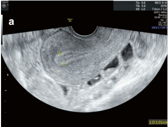
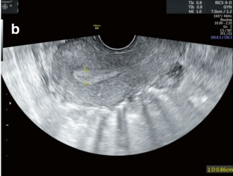
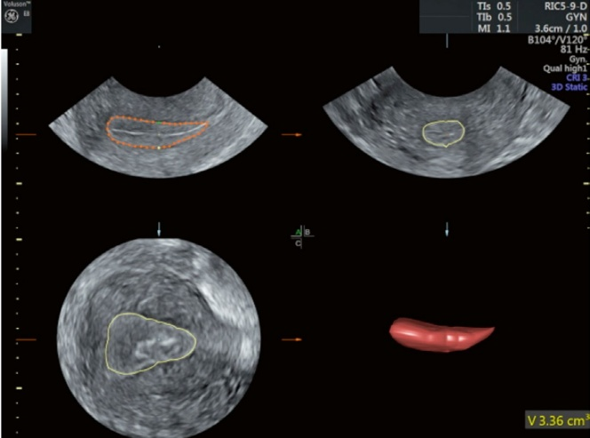

6.2 超声评估子宫内膜容受性的内膜形态学指标
6.2.1 子宫内膜厚度
子宫内膜的功能层会响应卵巢分泌的雌激素和孕激素发生周期性变化。子宫内膜厚度是评估ER最常用的超声指标，并显著影响妊娠结局[4]。通常建议通过经阴道超声在矢状切面测量子宫内膜[9]。
1. 子宫内膜厚度测量和ER评估的时间点
尽管着床窗口期处于子宫内膜分泌期，但在临床实践中，超声评估子宫内膜（ER）的时间通常设定在子宫内膜增殖期的末期。这对应于自然周期排卵前一天、卵巢刺激周期hCG注射日以及激素替代周期黄体酮给药日。此时间点用于指导后续的咨询和治疗。一项比较了妊娠组和非妊娠组不同月经周期阶段子宫内膜厚度的荟萃分析显示，在增殖期末（hCG日和补充黄体酮日）时，两组间子宫内膜厚度存在统计学上的显著差异。然而，在取卵日、冷冻-复苏周期胚胎移植日或着床前周期的黄体后期测量时，未观察到子宫内膜厚度的显著差异[8]。
研究表明，在黄体酮补充日进行医学冷冻胚胎移植周期时，最佳子宫内膜厚度为9至14毫米 [10]。过薄的子宫内膜被广泛认为对妊娠不利 [11]，是预测妊娠结局的阴性指标。也就是说，诊断为子宫内膜过薄的患者发生妊娠失败的可能性更大。然而，不同的研究对“子宫内膜过薄”有不同的定义。一项涉及33个中心、共24,000例新鲜胚胎移植和20,000例冷冻-复苏胚胎移植周期的研究发现，在新鲜IVF周期中，每当子宫内膜厚度低于8毫米时，临床妊娠率和活产率就会下降；在冷冻-复苏IVF周期中，每当子宫内膜厚度低于7毫米时，也会出现下降 [12]。其他研究表明，子宫内膜厚度<7毫米与活产率显著下降相关。
6.2 Markers of Endometrial Morphology for Evaluating Endometrial Receptivity by Ultrasound
6.2.1 Thickness of the Endometrium
The functional layer of the endometrium undergoes cyclic changes in response to estrogen and progesterone secreted by the ovaries. Endometrial thickness is the most commonly used ultrasound marker for evaluating ER and significantly impacts pregnancy outcomes [4]. It is generally recommended that the endometrium be measured in the sagittal plane by transvaginal ultrasound [9].
1. Timing of endometrial thickness measurement and ER evaluation
Although the implantation window falls during the secretory phase of the endometrium, in clinical practice, the timing of ultrasound evaluation of ER is typically set at the end of the proliferative phase of the endometrium. This corresponds to the day before ovulation in a natural cycle, the day of hCG injection in an ovarian stimulation cycle, and the day of progesterone administration in a hormone replacement cycle. This timing is used to guide subsequent consultation and treatment. A meta-analysis comparing endometrial thickness at different stages of the menstrual cycle between pregnant and nonpregnant groups showed a statistically significant difference in endometrial thickness at the end of the proliferative phase (hCG day and progesterone supplementation day) between the two groups. However, no significant difference was observed in endometrial thickness measured on the egg retrieval day, the day of embryo transfer in a frozen-thaw cycle, or during the midluteal phase in the cycle before implantation [8].
It has been shown that the optimal endometrial thickness for embryo implantation on the progesterone supplementation day in medical frozen-thawed embryo replacement cycles is between 9 and 14 mm [10]. The thin endometrium is widely recognized as detrimental to pregnancy [11] and serves as a negative predictor of pregnancy outcomes. That is, patients diagnosed with thin endometrium are more likely to experience pregnancy failure. However, different studies define “thin endometrium” in varying ways. A study involving 24,000 fresh embryo transfer and 20,000 frozen-thawed embryo transfer cycles across 33 centers found that clinical pregnancy and live birth rates decreased for each millimeter of endometrial thickness below 8 mm in fresh IVF cycles and below 7 mm in frozen-thaw IVF cycles [12]. Other studies have shown that an endometrial thickness of <7 mm is associated with a significant decline in live birth.
率，子宫内膜厚度 <6 mm 与活产率的急剧下降相关 [13]。一些研究还表明，子宫内膜厚度大于 14 mm 可能与妊娠率降低有关。然而，其他研究得出结论，子宫内膜厚度没有上限，只要不存在病理情况，过厚的子宫内膜不应自动导致胚胎移植周期的取消 [13]。
在体外受精周期中评估胚胎移植日子宫内膜厚度的意义仍存在争议。一些研究表明，移植日子宫内膜厚度 $\geq$ 9 mm与更高的持续妊娠率相关。相比之下，其他研究指出，移植日子宫内膜厚度是预测妊娠结局的较差指标，临床指导有限。这些研究提示，在胚胎移植日子宫内膜过薄的情况下可能无需干预，并建议取消对植入日特定子宫内膜厚度范围（例如3–22 mm）的要求 [14]。
子宫内膜在黄体期会受到孕激素的影响而发生一系列变化。最近，研究人员提出，整个黄体期子宫内膜厚度的动态变化可能比评估任何单一时间点的绝对厚度更具信息量。
2. 黄体期子宫内膜厚度和内分泌反应的变化
尽管教科书和妇科超声指南指出，与增殖期相比，分泌期的子宫内膜会增厚 [15]，但在临床实践中，分泌期子宫内膜厚度减小的情况并不少见。在胚胎移植当天出现这种现象引起了患者的担忧，但在这个阶段，这些担忧似乎是不必要的。一些研究表明，与增殖期相比，三分之一的患者在分泌期子宫内膜厚度减小，而另外三分之二的患者则增加或无变化 [16]。
有报道称，接受孕激素治疗后子宫内膜厚度下降了 10% 的患者的持续妊娠率显著高于子宫内膜厚度增加或无变化的患者（分别为 52% 对 24%）。此外，子宫内膜厚度的减小程度越大，妊娠率越高 [16, 17]。
研究人员提出，由于分泌期孕激素受体被激活，超声成像可能会显示增强和更致密的子宫内膜回声，并伴有不同程度的厚度变化，所有这些都被认为是正常的（图 6.1）。相比之下，该阶段持续增加的子宫内膜厚度可能提示子宫内膜对孕激素反应不良、缺乏孕激素受体或由于慢性炎症或子宫内膜异位症等情况引起的孕激素抵抗。这些因素可能会对妊娠结局产生负面影响 [16, 17]。然而，这一假设需要进一步研究。
最近的一项研究表明，无论在胚胎移植当天子宫内膜厚度是增加、减少还是保持不变，与妊娠结局都没有相关性 [18]。
rates, and endometrial thickness <6 mm is linked to a dramatic decline in live birth rates [13]. Some studies also suggest that endometrial thickness greater than 14 mm may be associated with decreased pregnancy rates. However, others have concluded that an upper limit for endometrial thickness does not exist, and a “too-thick” endometrium should not automatically lead to the cancellation of an embryo transfer cycle, provided that no pathological condition is present [13].
The significance of assessing endometrial thickness on the day of embryo transfer in an IVF cycle remains controversial. Some studies have shown that an endometrial thickness of $ \geq $9 mm on the day of transfer is associated with a higher rate of sustained pregnancy. In contrast, other studies have indicated that endometrial thickness on the day of transfer is a poor predictor of pregnancy outcomes, offering limited clinical guidance. These studies suggest that there may be no need to intervene in cases of thin endometrium on the day of embryo transfer and propose eliminating the requirement for a specific endometrial thickness range on the day of implantation (e.g., 3–22 mm) [14].
The endometrium undergoes a series of changes during the secretory phase under the influence of progesterone. Recently, researchers have proposed that the dynamic changes in endometrial thickness throughout the secretory phase may be more informative than evaluating the absolute thickness at any single time point.
2. Changes in endometrial thickness and ER during the secretory phase
Although textbooks and gynecologic ultrasound guidelines suggest that the endometrium thickens during the secretory phase compared to the proliferative phase [15], a decrease in endometrial thickness during the secretory phase is not uncommon in clinical practice. The presence of this phenomenon on the day of embryo transfer has raised concern among patients, but at this stage, such concerns appear to be unwarranted. Some studies have shown that endometrial thickness decreased in 1/3 of patients during the secretory phase compared to the proliferative phase, while it increased or remained unchanged in 2/3 of patients [16].
It has been reported that the sustained pregnancy rate in patients with a 10% decrease in endometrial thickness after progesterone administration was significantly higher than that of patients with increased or unchanged endometrial thickness (52% vs. 24%). Moreover, the greater the decrease in endometrial thickness, the higher the pregnancy rate [16, 17].
Researchers have suggested that, as progesterone receptors are activated during the secretory phase, ultrasound imaging may show enhanced and denser endometrial echogenicity, along with varying degrees of thickness, all of which are considered normal (Fig. 6.1). In contrast, a persistent increase in endometrial thickness during this phase could indicate a poor endometrial response to progesterone, a lack of progesterone receptors, or progesterone resistance due to conditions like chronic inflammation or endometriosis. These factors may negatively impact pregnancy outcomes [16, 17]. However, this hypothesis requires further investigation.
A recent study demonstrated that endometrial thickness did not correlate with pregnancy outcomes in patients undergoing IVF, regardless of whether it increased, decreased, or remained unchanged on the day of embryo transfer [18].


6.2.2 子宫内膜形态
在临床实践中，子宫内膜的形态通常可分为三型（详见第3章3.2节）。这些周期性形态变化的生理基础在于月经周期过程中雌激素和孕激素水平的波动。排卵前，子宫内膜主要受雌激素影响，在超声上表现为“三层线”子宫内膜，代表增殖期。排卵后，随着孕激素水平升高，子宫内膜逐渐由“等回声”转变为“均质高回声”外观。
一项涉及接受宫腔内输精（IUI）治疗的患者的荟萃分析发现，在hCG注射日或IUI当天具有“三线”子宫内膜的患者有更高的临床妊娠率。相比之下，在进行体外受精（IVF）的患者中，无论子宫内膜是在hCG注射日、hCG注射后第1天、取卵日、黄体酮给药日还是胚胎移植日显示“三线”，妊娠结局相似 [8]。
尽管许多临床医生认为在新鲜胚胎移植周期中hCG注射日或冷冻-复苏周期中黄体酮给药日出现“三线”子宫内膜可带来更好的妊娠结局，但最近的荟萃分析并未提供足够的证据支持这一观点。
6.2.3 子宫内膜容积
子宫内膜容积是用于评估ER的3D超声指标。它通过在3D超声上手动勾画整个子宫内膜边缘，并使用虚拟器官计算机辅助分析（VOCAL）软件测量获得（图6.2）。子宫内膜厚度与子宫内膜容积呈显著相关性。
6.2.2 Endometrial Morphology
In clinical practice, the morphology of the endometrium is typically categorized into three types (see details in Sect. 3.2 of Chap. 3). The physiological basis for these cyclic changes in morphology lies in the fluctuations of estrogen and progesterone levels throughout the menstrual cycle. Before ovulation, the endometrium is primarily influenced by estrogen, and it appears as a “triple-line” endometrium on ultrasound, representing the proliferative phase. Following ovulation, as progesterone levels rise, the endometrium gradually transforms from an “isoechogenic” to a “homogeneous hyperechogenic” appearance.
A meta-analysis involving patients treated with intrauterine insemination (IUI) found that those with a “triple-line” endometrium on the day of hCG injection or IUI day had a higher clinical pregnancy rate. In contrast, among patients undergoing in vitro fertilization (IVF), pregnancy outcomes were similar regardless of whether the endometrium displayed the “triple line” on the day of hCG injection, 1 day after hCG injection, on the day of egg retrieval, the day of progesterone administration, or the day of embryo implantation [8].
Although many clinicians believe that a “triple-line” endometrium on the day of hCG injection in fresh embryo transfer cycles or on the day of progesterone administration in frozen-thawed cycles leads to better pregnancy outcomes, the recent meta-analysis does not provide sufficient evidence to support this view.
6.2.3 Endometrial Volume
Endometrial volume is a 3D ultrasound index used to evaluate ER. It is obtained by manually outlining the entire endometrial border on 3D ultrasound, with measurements taken using virtual organ computer-assisted analysis (VOCAL) software (Fig. 6.2). There is a significant correlation between endometrial thickness and endometrial volume.

一项对550例宫腔接种（IUI）周期的研究发现，在IUI当天，妊娠组的子宫内膜容积高于非妊娠组。然而，八项关于体外受精（IVF）的临床试验结果显示，无论是在hCG注射日还是胚胎移植日测量，妊娠组和非妊娠组的子宫内膜容积无显著差异[8]。
尽管缺乏支持子宫内膜容积预测妊娠结局的决定性证据，但许多研究使用2.5 mL的阈值 [19]。一项分析妊娠失败患者的研究发现，3.2 mL的子宫内膜容积阈值在冷冻-复苏周期中以96%的准确率预测了妊娠失败 [20]。然而，子宫内膜容积作为预测不良妊娠结局的价值仍有待进一步研究证实。
6.2.4 子宫内膜蠕动（EP）
与引起痛经和分娩疼痛的表层子宫肌层收缩不同，子宫内膜蠕动源于子内膜下肌层的收缩。这种收缩产生类似于肠道蠕动的子宫内膜波运动（图6.3）。子内膜下肌层，也称为交界
A study of 550 intrauterine insemination (IUI) cycles found that the pregnant group had a higher endometrial volume on the day of IUI compared to the nonpregnant group. However, results from eight clinical trials on in vitro fertilization (IVF) showed no significant difference in endometrial volume between pregnant and nonpregnant groups, whether measured on the day of hCG injection or the day of embryo transfer [8].
Despite the lack of conclusive evidence supporting the predictive value of endometrial volume for pregnancy outcomes, many studies have used a threshold of 2.5 mL [19]. One study analyzing patients with pregnancy failure found that an endometrial volume threshold of 3.2 mL predicted pregnancy failure with 96% accuracy in frozen-thawed cycles [20]. However, the value of endometrial volume as a predictor of negative pregnancy outcomes remains to be confirmed through further studies.
6.2.4 Endometrial Peristalsis (EP)
Unlike the out-layer uterine muscle contractions that cause dysmenorrhea and labor pain, EP results from the contraction of the sub-endometrial myometrial layer. This contraction generates endometrial wave motion, similar to intestinal peristalsis (Fig. 6.3). The sub-endometrial myometrial layer, also known as the junctional


该区域由子宫内膜的基底层和子宫肌层的内三分之一组成。由于该区域的水分含量相对较低，因此在T2加权像上，磁共振成像（MRI）显示出与高信号的子宫内膜和均匀信号的外层子宫肌层不同的低信号带。
经阴道超声检查可以检测到子宫结合带（JZ）（图6.4）。该区域的收缩及其频率受卵巢产生的周期性激素波动调节。它们可能受到靠近子宫结合带（JZ）的病变的影响，例如子宫肌瘤、子宫内膜息肉和子宫腺肌病。子宫结合带（JZ）异常收缩可能导致不良妊娠结局。然而，由于评估子宫结合带（JZ）收缩耗时且劳动密集，目前尚未纳入常规妇科超声检查，临床指南中也未提及。
EP以子宫结合带（JZ）的收缩开始。研究已根据其方向性将EP波分为五种类型：(a) 从宫颈向穹窿移动的蠕动波；
zone, consists of the basal layer of the endometrium and the inner third of the myometrium. Due to this region's relatively low water content, magnetic resonance imaging (MRI) shows a low-signal band distinct from the high-signal endometrium and the homogeneous-signal outer myometrium on T2-weighted images.
Transvaginal ultrasonography can detect the junctional zone (Fig. 6.4). Contractions of this zone and their frequency are regulated by cyclic hormonal fluctuations produced by the ovaries. They can be influenced by lesions near the junctional zone, such as uterine fibroids, endometrial polyps, and adenomyosis. Abnormal contractions of the junctional zone may lead to poor pregnancy outcomes. However, the assessment of junctional zone contractions is currently not part of routine gynecologic ultrasound practices due to its time-consuming and labor-intensive nature, and it is not addressed in clinical guidelines.
EP begins with the contraction of the junctional zone. Studies have categorized EP waves into five types based on their directionality: (a) peristalsis waves moving
从穹窿向宫颈移动的蠕动波；(c) 同时从子宫穹窿和宫颈两个方向发出的波；(d) 方向不定的随机蠕动波；以及(e)无运动 [21, 22]。
宫颈分泌物（EP）在正常的生殖功能和胚胎着床中起着至关重要的作用。在早期卵泡期，EP的特点是从子宫底到宫颈移动的波浪，主要促进分泌物的排出并预防微生物感染。随着卵泡的发育和雌激素水平的升高，EP会增强，在排卵期达到高峰，此时波浪主要从宫颈指向子宫底，有助于精子的运输。排卵后，EP频率下降，直到黄体中期，随机方向的波浪占主导地位，为胚胎充分与子宫内膜结合提供了时间和机会。在晚期黄体期，子宫内膜相对静止，这对胚胎着床有利 [23]。
子宫内膜电活动（EP）的紊乱，包括蠕动过度和幅度过大，会不利于胚胎着床并增加异位妊娠的几率。研究表明，在胚胎移植前，EP频率低于每分钟两波的女性有最高的临床妊娠率，而频率超过每分钟三波的女性妊娠率则显著降低 [24]。
目前，EP波是通过经阴道超声目视检测的，但结果高度主观且重复性差，操作耗时，难以在常规临床实践中采用。因此，需要更准确的检测设备和分析方法来进一步探索该领域。
from the cervix to the fundus; (b) peristalsis waves moving from the fundus to the cervix; (c) waves emanating simultaneously from both the uterine fundus and cervix in opposite directions; (d) random peristalsis waves of variable directions; and (e) no motion [21, 22].
EP plays a crucial role in normal reproductive function and embryo implantation. In the early follicular phase, EP is characterized by waves moving from the uterine fundus to the cervix, primarily promoting the discharge of secretions and preventing microbial infections. As follicles develop and estrogen levels increase, EP intensifies, reaching its peak in the periovulatory period, with waves predominantly directed from the cervix to the fundus, which aids in the sperm transport. Following ovulation, EP frequency decreases, and random waves in opposite directions dominate until the midluteal phase, providing time and opportunity for the embryo to fully engage with the endometrium. During the late luteal phase, the endometrium becomes relatively quiescent, which is favorable for embryo implantation [23].
Dysregulation of EP, including excessive frequency and amplitude of peristalsis, can adversely affect embryo implantation and increase the likelihood of ectopic pregnancy. Research indicates that the highest clinical pregnancy rates are found in women with an EP frequency of less than two waves per minute prior to embryo transfer, whereas those with more than three waves per minute have significantly lower pregnancy rates [24].
Currently, EP waves are detected visually by transvaginal ultrasound, but the results are highly subjective and poorly reproducible, and the procedure is time-consuming, making it challenging to adopt in routine clinical practice. Therefore, more accurate testing equipment and analytical methods are needed to further explore this area.